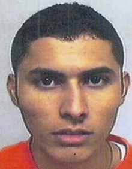

Rodrigo "el chino antrax"
José Rodrigo Aréchiga Gamboa (n. 22 de octubre de 1980 en Culiacán, Sinaloa, México - Ibidem, 16 de mayo de 2020),1 más conocido como El Chino Ántrax, fue un narcotraficante mexicano fundador y líder de la célula criminal Los Ántrax, brazo armado del Cártel de Sinaloa.. En el 2008, tras la captura de Vicente Zambada Niebla, Skiptor, Aréchiga Gamboa se convirtió en jefe de plaza y jefe de sicarios al servicio del Mayo Zambada en áreas activas como Sinaloa, Sonora, Durango, Chihuahua y Nuevo León.23 Era un miembro superior del Cártel de Sinaloa, una organización criminal dedicada al narcotráfico, encabezada por Ismael el Mayo Zambada; el narcotraficante más buscado de México.4